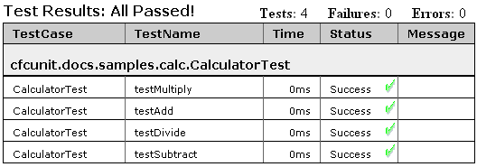
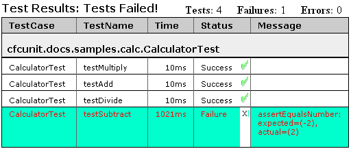
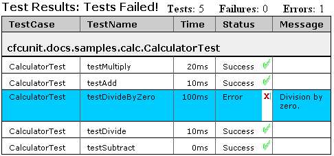
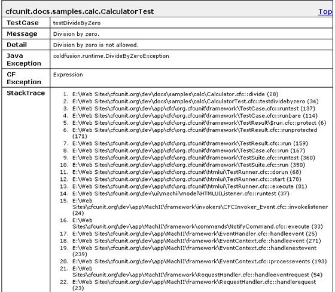

So, how does one go about writing tests? First, you need something to test. To keep this simple, let's imagine we have a component called "Calculator". It has the following methods, each of which returns a numeric value:
<cfcomponent name="Calculator" output="false"
hint="This is a basic calculator">
<cffunction name="add" returntype="numeric" access="public" output="false"
hint="Adds op2 to op1.">
<cfargument name="op1" type="numeric" required="true" hint="Left operand."/>
<cfargument name="op2" type="numeric" required="true" hint="Right operand"/>
<cfreturn (arguments.op1 + arguments.op2)/>
</cffunction>
<cffunction name="subtract" returntype="numeric" access="public" output="false"
hint="Subtracts op2 from op1.">
<cfargument name="op1" type="numeric" required="true" hint="Left operand."/>
<cfargument name="op2" type="numeric" required="true" hint="Right operand."/>
<cfreturn (arguments.op1 - arguments.op2)/>
</cffunction>
<cffunction name="multiply" returntype="numeric" access="public" output="false"
hint="Multiplies op1 by op2.">
<cfargument name="op1" type="numeric" required="true" hint="Left operand."/>
<cfargument name="op2" type="numeric" required="true" hint="Right operand."/>
<cfreturn (arguments.op1 * arguments.op2)/>
</cffunction>
<cffunction name="divide" returntype="numeric" access="public" output="false"
hint="Divides numerator by divisor.">
<cfargument name="numerator" type="numeric" required="true" hint=""/>
<cfargument name="divisor" type="numeric" required="true" hint=""/>
<cfreturn (arguments.numerator / arguments.divisor)/>
</cffunction>
</cfcomponent>
We need to test that this component does everything its says it does without any errors. To do this we can write a Test Case. A Test Case is a component that defines and runs one or more tests. Since this Test Case is going to test the Calculator component, let's call it "CalculatorTest".
What needs to be tested in Calculator? We should at least test that the four methods (add, subtract, multiply and divide) work. Create one test for each one and call them testAdd(), testSubtract(), testMultiply and testDivide(). Now, let's create the CalculatorTest component. In order for CalculatorTest to be considered a Test Case by the testing framework and have access to the functionality of the framework, this component needs to extend the org.cfcunit.framework.TestCase component. For each test create a method with the name of the test—always make sure that a test method name is prefixed with "test"—with a returntype of "void" and "public" access. This ensures that the testing framework recognizes these four methods as your individual tests.
So far, this is what "CalculatorTest" looks like:
<cfcomponent name="CalculatorTest" extends="org.cfcunit.framework.TestCase"
output="false"
hint="This tests the Calculator component.">
<cffunction name="testAdd" returntype="void" access="public" output="false">
</cffunction>
<cffunction name="testSubtract" returntype="void" access="public" output="false">
</cffunction>
<cffunction name="testMultiply" returntype="void" access="public" output="false">
</cffunction>
<cffunction name="testDivide" returntype="void" access="public" output="false">
</cffunction>
</cfcomponent>
While this isn't much to look at, this is will run as 4 valid tests. To see this, just open up the test runner, enter the fully qualified name of this component, and press "Run Test". You should get the message "Test Results: All Passed!":

Now lets go ahead and write the test for the add() method. In "CalculatorTest", this is the testAdd() method. The add() method is pretty simple. It takes two numeric parameters and returns their sum. To test this, we simply create an instance of Calculator and call its add() method with two known values that produce a known sum. A simple case is "1 + 1 = 2". We then take the result of the calculation and compare it to the expected value of 2. This is done using an assertion method—in this case we use assertEqualsNumber()—which takes the expected value and the actual value and compares them. If they are not equal, it signals a test failure and provides a message that indicates the nature of the failure.
Here is the code for testAdd():
<cffunction name="testAdd" returntype="void" access="public" output="false">
<cfset var calc = CreateObject("component", "Calculator")>
<cfset assertEqualsNumber(2, calc.add(1, 1))>
</cffunction>
Add this code and run the test runner. The test passes. Let's go ahead and add the tests for subtract(), multiply() and divide():
<cffunction name="testSubtract" returntype="void" access="public" output="false">
<cfset var calc = CreateObject("component", "Calculator")>
<cfset assertEqualsNumber(1, calc.subtract(3, 2))>
<cfset assertEqualsNumber(0, calc.subtract(1, 1))>
<cfset assertEqualsNumber(-2, calc.subtract(-1, 1))>
<cfset assertEqualsNumber(-2, calc.subtract(1, -1))>
</cffunction>
<cffunction name="testMultiply" returntype="void" access="public" output="false">
<cfset var calc = CreateObject("component", "Calculator")>
<cfset assertEqualsNumber(10, calc.multiply(5, 2))>
<cfset assertEqualsNumber(0, calc.multiply(5, 0))>
<cfset assertEqualsNumber(-10, calc.multiply(-5, 2))>
</cffunction>
<cffunction name="testDivide" returntype="void" access="public" output="false">
<cfset var calc = CreateObject("component", "Calculator")>
<cfset assertEqualsNumber(3, calc.divide(15, 5))>
<cfset assertEqualsNumber(-3, calc.divide(15, -5))>
<cfset assertEqualsNumber(0, calc.divide(0, 1))>
</cffunction>
Run the tests again, and there is a different result:

Well, it seems that there is a problem with one of the tests. Taking a look at the testSubtract() test method, the highlighed line below reveales failure's source:
<cffunction name="testSubtract" returntype="void" access="public" output="false">
<cfset var calc = CreateObject("component", "Calculator")>
<cfset assertEqualsNumber(1, calc.subtract(3, 2))>
<cfset assertEqualsNumber(0, calc.subtract(1, 1))>
<cfset assertEqualsNumber(-2, calc.subtract(-1, 1))>
<cfset assertEqualsNumber(-2, calc.subtract(1, -1))></cffunction>
The problem is the arguments specified in the assertEqualsNumber() method call which checks that -2 is the result of calc.subtract(1, -1). Of course, 1 - (1) equals 0, so this assertion fails and displays an assertion failure message in the test results. To remove the failure in test, simply change the first "expected" argument in assertEqualsNumber() to 2:
<cffunction name="testSubtract" returntype="void" access="public" output="false">
<cfset var calc = CreateObject("component", "Calculator")>
<cfset assertEqualsNumber(1, calc.subtract(3, 2))>
<cfset assertEqualsNumber(0, calc.subtract(1, 1))>
<cfset assertEqualsNumber(-2, calc.subtract(-1, 1))>
<cfset assertEqualsNumber(2, calc.subtract(1, -1))></cffunction>
When examining each of the test methods you might notice that each of them has code in common. It is the first line that instantiates the Calculator object. This is a very common occurance when creating unit tests, and is commonly refered to the test fixture. The solution to this duplicate code is to consolidate it into a separate method called setUp() which must have a "void" return type and access of "private". The testing framework is responsible for calling this specific method before each test method. Here is what the CalculatorTest component looks like when utilizing the setUp() method:
<cfcomponent name="CalculatorTest" extends="org.cfcunit.framework.TestCase"
output="false"
hint="This tests the Calculator component.">
<cfset variables.calculator = "">
<cffunction name="setUp" returntype="void" access="private">
<cfset variables.calculator = CreateObject("component", "Calculator")>
</cffunction>
<cffunction name="testAdd" returntype="void" access="public">
<cfset assertEqualsNumber(2, variables.calculator.add(1, 1))>
</cffunction>
<cffunction name="testSubtract" returntype="void" access="public">
<cfset assertEqualsNumber(1, variables.calculator.subtract(3, 2))>
<cfset assertEqualsNumber(0, variables.calculator.subtract(1, 1))>
<cfset assertEqualsNumber(-2, variables.calculator.subtract(-1, 1))>
<cfset assertEqualsNumber(2, variables.calculator.subtract(1, -1))>
</cffunction>
<cffunction name="testMultiply" returntype="void" access="public">
<cfset assertEqualsNumber(10, variables.calculator.multiply(5, 2))>
<cfset assertEqualsNumber(0, variables.calculator.multiply(5, 0))>
<cfset assertEqualsNumber(-10, variables.calculator.multiply(-5, 2))>
</cffunction>
<cffunction name="testDivide" returntype="void" access="public">
<cfset assertEqualsNumber(3, variables.calculator.divide(15, 5))>
<cfset assertEqualsNumber(-3, variables.calculator.divide(15, -5))>
<cfset assertEqualsNumber(0, variables.calculator.divide(0, 1))>
</cffunction>
</cfcomponent>
In addition to the setUp() method, there is also a method called tearDown() that is called immediately after each of the tests run by the framework. It is used to restore the state of the system to where it was before the test was run. Many times this sort of thing includes cleaning up files, resetting variables and undoing any changes in a database. These two methods allow you to write tests without having to worry about the details of how things get set up every time. You are also more free to make changes to the test fixture since it resides in only one place instead of four.
The four tests written so far test only the most basic functionality of the Calculator component. What we really want to test, though, are the boundary cases--things like dividing by zero and floating point calculations. That said, let's write a test that shows what happens when attempting to divide a number by zero.
<cffunction name="testDivideByZero" returntype="void" access="public">
<cfset var value = variables.calculator.divide(10, 0))>
</cffunction>
Running the tests again, we get the following results:

Notice that the status for the testDivideByZero test is "Error". If you look back at the results for the last time we had a problem with the tests you will notice that the status for the testSubtraction test was "Failure". What's the difference? Basically, a Failure is the result of an unsatisfied assertion as specified in one of the assert*() methods. An Error on the other hand is any unexpected (thus unchecked) exception that is thrown by the component under test. It usually indicates something that you do not test, but may wish to in future tests.
Since errors are not expected and thus not tested for, a bit of information is provided with the error notification. Aside from the name of the TestCase, the exception's message and detail values are displayed. The exception type is also provied in two forms: first is the Java-level exception type, followed by the more general ColdFusion-level exception type. The last item is the stacktrace at the time of the exception. All this information is extremely helpful in tracking down errors:

To fix this error in the test, we have several options. First, the Calculator component could be modified so that is does not throw "DivideByZeroException". This would allow the test to pass, but what would the divide() method return instead of throwing an exception? There really isn't a good answer to that question since the value is really undefined. The second option is to keep the exception as it is, but change the test to anticipate the exception and catch it. In fact, the test should fail if the exception is NOT thrown. Here is the new code for the testDivideByZero() method:
<cffunction name="testDivideByZero" returntype="void" access="public">
<cfset var value = "">
<cftry>
<cfset value = variables.calculator.divide(10, 0)>
<cfset fail("DivideByZeroException was not thrown.")>
<cfcatch type="coldfusion.runtime.DivideByZeroException">
</cfcatch>
</cftry>
</cffunction>
If the tests are run again, there should be no errors and no failures.